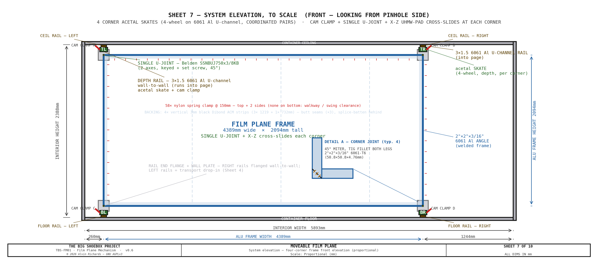
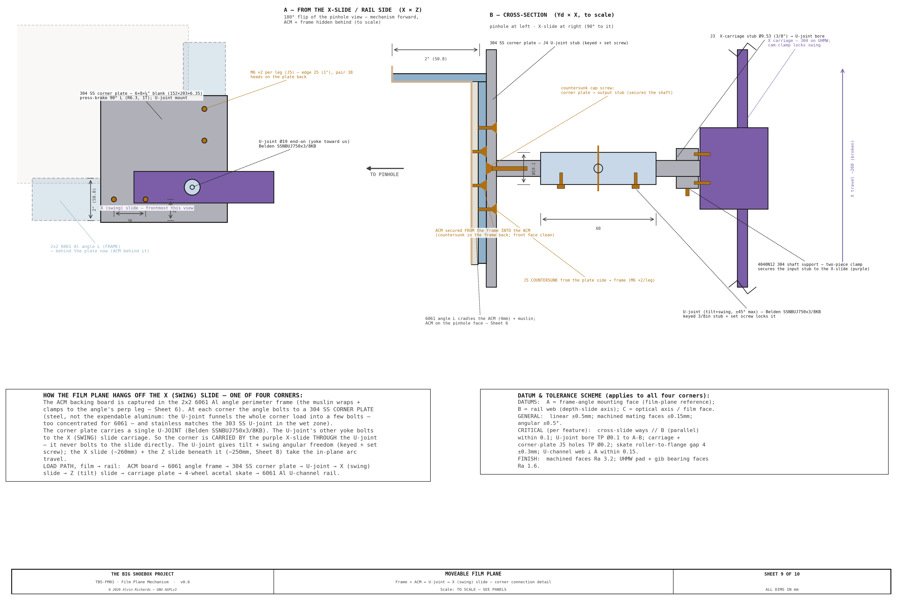
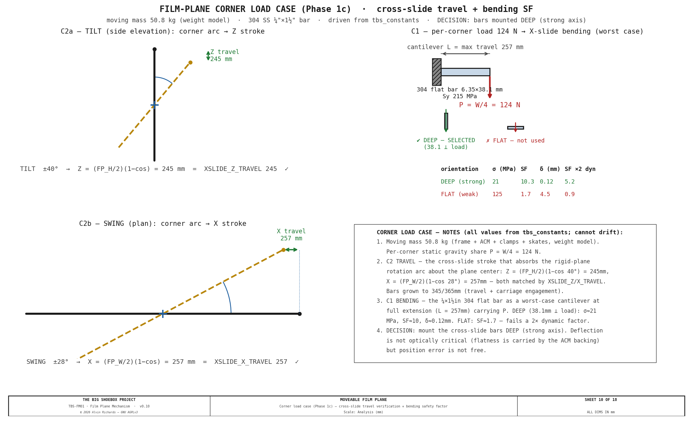

Film Plane — Mechanism Design¶
1. Purpose¶
The configuration the photosensitive film plane is flush against one of the 20ft long-side walls of the container. This report describes a view-camera-style moveable film plane — a mechanism with four corner carriages (TL, TR, BL, BR) driven in coordinated pairs, carrying a fixed-size rigid plane that changes only its angle — allowing tilt, swing, and limited combined movements comparable to a large-format view camera's rear standard.
System context — container floor plan: The floor plan below shows the film plane rail positions in the context of the complete TBS-001 interior, including left end zone (light trap), processing tray and perimeter walkway in the optical zone, and right end zone (4× IBCs in 2×2 stack, pump manifold on the Corridor Plumbing Panel and the filter skid on the Pinhole Wall Plumbing Panel).

Interactive 3D model — the fixed-size rigid film plane on its four slide-and-clamp corner carriages, shown against a ghost of the perimeter walkway and the IBC frame. Drag to orbit, scroll to zoom; the Movement and whole-plane scenes let you click a corner — or the whole frame — to cycle it through a tilt or swing, and the per-corner detail scenes show each 6061 Al U-channel depth rail, acetal skate, Z/X cross-slide, and the single U-joint.
2. Container Reference Geometry¶
| Dimension | Value | Notes |
|---|---|---|
| Interior length | 5,893mm (19 ft 4 in) | Film plane spans this direction |
| Interior width | 2,362mm (7 ft 9 in) | Optical axis = focal length |
| Interior height | 2,094mm (6 ft 10 in) | Film plane height |
| Pinhole position | Center of one 20ft long-side wall | |
| Nominal film plane | Opposite 20ft long-side wall | flush to wall |
| Structural ribs | Every 457mm (18 in) along length | Rail mounting points |
3. Movement Axes¶
The four-corner mechanism supports all view-camera movements. Corners are labeled TL (top-left), TR (top-right), BL (bottom-left), BR (bottom-right) — where left/right refers to the rail span direction and top/bottom to the 7 ft 10 in height direction.
| Axis | Corners Controlled | Max Travel | Effect |
|---|---|---|---|
| Tilt (top) | TL + TR together | 100–2,262mm | Perspective convergence, keystone |
| Tilt (bottom) | BL + BR together | 100–2,262mm | Perspective convergence, keystone |
| Swing (left) | TL + BL together | 100–2,262mm | Left-right perspective skew |
| Swing (right) | TR + BR together | 100–2,262mm | Left-right perspective skew |
| Compound (limited) | Tilt + swing together | 100–2,262mm | Combined tilt+swing — limited range; plane stays flat (no twist) |
| Back focus | All 4 together | 100–2,262mm | Uniform magnification change |
| Rise / Fall | All 4 together, offset vertically | ±200mm | Horizon shift |
| Shift | All 4 together, offset horizontally | ±300mm | Left/right perspective offset |
Maximum tilt angle (single-axis): 40° — set by the cross-slide Z travel (~250mm); the depth rails alone would allow ~65°.
Maximum swing angle (single-axis): 28° — rail-depth limited ≈ 28.7°.
Swing is the binding limit because the plane is 4,389mm wide — the same depth travel over a wider span sweeps the corner further along the rail. Combined tilt+swing is further limited — see §5.
Because the plane is a fixed-size rigid rectangle, its physical height stays 2,094mm at every angle — it does not grow. Corner cross-slides absorb the rigid-rotation arc travel instead, so a single rigid backing panel suffices.
4. Mechanism Design¶
Note: The drawings (Sheets 1–8) and distortion renders show axis tilt/swing — the rigid plane rotates about its center and foreshortens (it never grows), illustrated about the mid-rail position (the film back-focuses anywhere along the rail; flat-at-far-wall is the max-focal-length extreme). The interactive 3D model
models/film-plane-mechanism.skpalso reflects this.
Four-Corner Frame¶
Each corner of the film plane frame rides on its own carriage assembly (driven in coordinated pairs, not independently — a rigid plane cannot warp):

- 4 depth rails — 3×1½" (76×38mm) 6061-T6 aluminum U-channel — its yield exceeds annealed 304 so strength holds, the ~1mm sag over 2.36m is optically irrelevant at f/1088, and flatness is carried by the ACM backing — one at each corner, running wall-to-wall along the 2,362mm optical axis. An acetal skate rides inside each; sliding it sets that corner's depth (focus / back-focus). The right rails (X=4,649mm) are permanently flanged to their wall seats; the left rails (X=260mm) are transport drop-ins that lift out.
- 4 acetal skates — a 4-wheel skate per corner: Ø32 acetal load rollers gravity-seated on the channel's bottom flange plus Ø20 keeper rollers captive under the top flange, all on Ø10 304 axles, carrying the corner's carriage plate.
- 12 cam clamps — three per corner. Each corner is slid by hand into position, then a cam-lever rail brake locks the skate to the U-channel — there are no leadscrews. The lock holds for the exposure and for transport.
- 8 corner cross-slides — a Z (tilt) slide plus an X (swing) slide at each corner, each a 304 stainless flat bar (¼"×1½") captured on UHMW self-lube pads with an adjustable brass-tip gib. The Z slide (~345mm) and X slide (~365mm) absorb the in-plane arc travel that a rigid rotation forces on each corner (≈245mm in Z at max tilt, ≈263mm in X at max swing — the bar length = that travel + the carriage, so it can reach the full ±40°/±28°), so the film plane stays a fixed-size flat rectangle instead of stretching; the gib drag holds the gravity-loaded vertical axis while the clamp is set.
- Film plane frame — welded 2"×2"×1/8" plain-6061 aluminum angle, kept as an expendable part (bare 6061 corrodes slowly in the splash-not-immersed cyanotype zone — inspect annually, replace on pitting; the ACM backing carries the flatness), a FIXED-SIZE rigid rectangle, 4,389mm × 2,094mm (rail span × film-plane height). Each corner connects to its cross-slide stack through a single universal joint (Belden SSNBUJ750x3/8KB, stainless, factory-booted (integral)): the U-joint supplies the two angular degrees of freedom (tilt + swing) while the cross-slides supply the translation. The joint bolts to the frame through a 304 stainless corner plate (detailed below) and to the X-slide carriage on 3/8" 304 stub shafts held in McMaster 4040N12 supports (see Sheet 3). Together they let the rigid plane tilt and swing without the frame ever changing size. The following diagrams show the range of movements of the film plane.

Viewed from above, the full range of swing movement can be seen above. Since both side rails allow the same range of movements, it allows the maximum range of creative control.

View from the side, the full range of tilt movement can be seen above. Since both the top and bottom rails allow the same range of movements, it allows the maximum range of creative control.
Mechanism Components¶
The master diagram for the components can be see in the diagram below. The following section discuss the details.

Why a U-Joint + Cross-Slides¶
The film plane is a fixed-size rigid rectangle; tilt and swing are a true rigid-body rotation of that rectangle. A rigid rotation moves each corner along an arc — partly along its depth rail (handled by the acetal skate) and partly across it (in X and Z). The 2-axis cross-slide absorbs that across-rail travel, and the single universal joint (Belden SSNBUJ750x3/8KB, 45° per axis) takes up the angular change so nothing binds. This pairing is what lets a rigid plane tilt and swing without stretching, and keeps the plane a single flat rectangle at every angle.
Each corner connects to that mechanism through a 304 stainless corner plate: the 6061 angle frame bolts to the plate, the plate carries the U-joint, and the U-joint's other yoke mounts on the X (swing) slide — so the corner is carried by the slide through the U-joint, never bolted to it directly. The plate is steel (not the expendable aluminum) because the U-joint funnels the whole corner load into a few bolts, and stainless for a galvanic/wet-zone match to the 303 SS U-joint. Sheet 9 details this connection square-on and in section.

Cross-Slide Load Case¶
The cross-slide travel and load were firmed against the rotation geometry and the moving mass (Sheet 10):
- Travel — the Z (tilt) and X (swing) strokes = (half-dimension) × (1 − cos angle), rotating about the plane center: Z = (FP_H/2)(1 − cos 40°) = 245 mm and X = (FP_W/2)(1 − cos 28°) = 257 mm, matching
XSLIDE_Z_TRAVEL/XSLIDE_X_TRAVELexactly. - Load — the ~51 kg moving plane puts ~W/4 = 124 N on each corner. The governing case is the horizontal X (swing) slide in bending at full extension (the Z slide takes gravity axially). The cross-slide bars are mounted deep — the 38.1 mm dimension in the load direction — giving σ ≈ 21 MPa, safety factor ≈ 10, deflection ≈ 0.1 mm. Mounted flat the bar is marginal (SF ≈ 1.7, failing under a 2× dynamic/asymmetry factor), so deep mounting is specified.

Positioning¶
Each corner is set by hand: roll the acetal skate along its U-channel to the target depth, slide the Z and X cross-slides to take up the rotation arc, then throw the cam clamp to lock the skate to the rail. The gib drag holds the vertical (Z) axis while the clamp is set, and the U-joint's twist-lock holds the angle.
Named movement modes: - Pure tilt: slide the two top corners (TL + TR) together to one depth; slide the two bottom corners (BL + BR) together to another. - Pure swing: slide TL and BL together; slide TR and BR together. - Back focus: slide all four corners by the same amount. - Compound (limited): set all four to a coordinated set of depths — the rigid plane stays flat (no twist).
All four corners lock independently on their own cam clamps, so a set position holds through the exposure and through transport.
Fixed-Size Plane — No Variable Geometry¶
Because the plane is a fixed-size rigid rectangle, its physical dimensions never change: the along-plane height stays 2,094mm at every tilt angle. The arc travel that the rotation forces on each corner is taken up entirely by the cross-slides (≈245mm Z at max tilt, ≈263mm X at max swing), not by the frame.
Single rigid backing panel: the backing is one flat ACM (aluminum composite) sheet, 4,389mm × 2,094mm, bonded to the rear of the angle frame — the panel simply rotates with the rigid plane.
Light Sealing¶
A tilted or swung plane opens gaps at its edges where the frame no longer sits flush against the wall. Two measures close them, both on the maintenance schedule (§8):
- Primary seal — a 1"×½" black EPDM foam strip bonded to all four frame edges, compressing to seal at the low angles.
- Secondary seal — Impact 9oz Duvetyne blackout curtains hung from the frame perimeter and weighted, draping to seal at the larger tilt/swing angles where the foam no longer reaches.
The EPDM foam tape and Duvetyne curtains are itemized in the §7 parts list.
5. Tilt / Swing Configurations¶
The plane stays flat at all times, so it is always a single tilt or swing (or a limited combination). Corner depths below are about the mid-rail center (1,181mm) — add the focus offset to reposition the whole plane. Film height is constant.
| Config | Name | TL | TR | BL | BR | Tilt | Swing | Film Height |
|---|---|---|---|---|---|---|---|---|
| C0 | Flat | 1181 | 1181 | 1181 | 1181 | 0° | 0° | 2,094mm |
| C1 | Mild tilt | 977 | 977 | 1385 | 1385 | 11.0° | 0° | 2,094mm |
| C2 | Strong tilt | 622 | 622 | 1740 | 1740 | 31.5° | 0° | 2,094mm |
| C3 | Max tilt | 494 | 494 | 1868 | 1868 | 40.0° | 0° | 2,094mm |
| C4 | Mild swing | 923 | 1439 | 923 | 1439 | 0° | 6.6° | 2,094mm |
| C5 | Strong swing | 412 | 1950 | 412 | 1950 | 0° | 20.0° | 2,094mm |
| C6 | Max swing | 125 | 2237 | 125 | 2237 | 0° | 28.0° | 2,094mm |
Depths measured from the pinhole wall about the mid-rail center. Tilt = asin(2·Δd_top-bottom / FP_H) about the plane center (FP_H=2094); swing = asin(2·Δd_left-right / FP_W) (FP_W=4389). Rail positions: left X=260mm, right X=4,649mm.
Combined tilt+swing is limited — the corners must all stay on the rails, so the full single-axis maxima cannot be used together.
6. Optical Distortion Summary¶
The six achievable flat configurations (C0–C5) on a checker grid (D = 8,000mm). Because Option A's plane is always flat, each render is a pure tilt or swing; the flat plane produces no compound twist (the C0–C5 labels here index the render set only — independent of the §5 mechanism configuration numbers):

A detailed analysis of the optical distortions can be found here.
7. Parts List¶
All items ship within the United States. Local Southern California pickup noted where available.
| Item | Spec | Qty | Supplier | Est. cost |
|---|---|---|---|---|
| 6061-T6 Al U-channel depth rail 3×1½"×0.2" (76×38mm), 8 ft (795M51) | 4 depth rails, one per corner, running wall-to-wall (~2,362mm, Yd0→C_WID) along the optical axis — an acetal skate rides inside each to set that corner's depth/focus. 6061-T6 aluminum, SAME 76×38 section. Structural check: 6061-T6 yield (~276 MPa) EXCEEDS annealed 304 (~215 MPa) so strength is fine; the ~3× lower E gives ~1mm sag vs ~0.4mm over the 2.36m span — optically irrelevant at f/1088, and flatness is carried by the ACM backing (same logic as the Al frame). Also ~34 kg lighter across the 4 rails. SOURCING: each rail must be ONE continuous piece ≥2,362mm (the skate can't cross a splice). Grainger 795M51 (6061 Al U-channel, 3×1½×0.2" wall) is stocked in 8 ft (2,438mm) lengths — one uncut stick spans the 2,362mm rail with margin, so 4 sticks = 4 rails, no splice. $81.99/8ft firm (2026-07-29). | 4 ea | Grainger | $328 |
| Belden SSNBUJ750x3/8KB needle-bearing U-joint (3/8" keyway bore, 45deg, SS, booted) (41D816) | One per corner — supplies the tilt+swing angular DOF. Belden SSNBUJ750x3/8KB (Grainger 41D816): 3/8" KEYWAY bore (3/32x3/64 key) locked by a set screw, 0.75" OD, 2-11/16" (68.3mm) overall, 45deg max operating angle, STAINLESS, NEEDLE-BEARING (upgrade from the old plain pin-and-block), 95 in-lb static breaking torque (far above the near-zero positioning load; backlash optically irrelevant at f/1088). COMES FACTORY-BOOTED — integral bellows OD 1-9/32" (32.54mm) x OL 1-1/4" (31.75mm), so NO separate boot part. $252.13 ea firm (Grainger 2026-08-13); x4 = $1,008.52. Retention J3/J4: keyed 3/8" stub (3/32x3/64 keyseat + key) + set screw. | 4 ea | Grainger | $1,009 |
| 3/32" sq × 3/64 SS machine keys (×8) — U-joint keyway | 8 keys (2/corner) for the SSNBUJ750x3/8KB 3/32x3/64 keyway — cut to length from 3/32in square 304 SS key stock; each keys the 3/8in stub to the joint bore (torque + anti-rotation), the joint set screw locks it axially. Cheap lot; firm at order. | 1 lot | McMaster-Carr | $6–$10 |
| McMaster 4040N12 304 shaft support (4040N12) | Two-piece 304 clamp securing the U-joint INPUT stub to the X (swing) slide, one per corner. $58 ea firm. | 4 ea | McMaster-Carr | $232 |
| 3/8" 304/304L SS rod — U-joint stub shafts (1× 3 ft) (89535K87) | Input + output stub shafts into the U-joint (2/corner ×4 = 8 short stubs, ~60–80mm each ≈ 560–640mm + kerf). ONE 3 ft (914mm) length ($13.25 firm) yields all 8 with margin. Each stub gets a 3/32×3/64 KEYSEAT for the SSNBUJ750x3/8KB keyway bore (fp-ujoint-key) — keyed for anti-rotation, then locked axially by the joint set screw (J3/J4). | 1 lot | McMaster-Carr | $13 |
| 1-1/4" OD acetal load rollers — Delrin rod (cut ×8) (8576K23) | Load rollers — 2 per skate × 4 = 8, cut 20mm wide from one 1 ft 1-1/4" OD (Ø31.75 ≈ Ø32) Delrin rod (8576K23, same stock as the spray skate), each drilled Ø10 bore to spin on the axle pin. Gravity-seated on the U-channel bottom flange. | 1 1 ft rod | McMaster-Carr | $11 |
| 3/4" OD acetal keeper rollers — Delrin rod (cut ×8) (8497K276) | Keeper rollers — 2 per skate × 4 = 8, cut 20mm wide from a 3/4" OD (Ø19.05 ≈ Ø20) Delrin rod (8497K276, 4 ft — min stock, ample spare), each drilled Ø10 bore; captive under the U-channel top flange. $14.60/4ft firm. | 1 4 ft rod | McMaster-Carr | $15 |
| 10mm × 60mm 304 SS axle pins (4-pack) — skate axles (B0816MQ5T6) | 16 skate axles (4 per skate × 4) — the same 10mm×60mm 304 SS clevis/axle pins the spray skate uses; 4 packs = 16 pins. The acetal rollers spin on these Ø10 pins. 304 (splash zone, matches the spray). $5/4-pack = $20. | 4 pack | Amazon | $20 |
| Skate carriage plate (×4) — fab | One carriage plate per corner — carries the 4 rollers on their axles + the inboard lip; the U-joint/cross-slide stack bolts to it. The only fab piece of the skate. FIRM DESIGN (Sheet 3 View A): 80×181×6mm 6061-T6 (aluminum; grown to 181 tall so the top keeper-axle row clears its ≥2×Ø10 edge distance). Hole pattern: 4× Ø10 stub-axle holes on a 40(Yd)×38(Z) grid + 4× M8 (J1) to the Z-slide (28×44) + 2× M4 for the cam-clamp base; all holes ≥2×Ø from the edges. Est. cost — firm at fab quote. | 4 ea | Local fab | $136–$236 |
| 304 flat-bar Z (tilt) + X (swing) cross-slides + UHMW pad + gib | One 2-axis cross-slide stack per corner — 304 flat-bar Z (tilt) + X (swing) slides on UHMW pads with an adjustable gib. MOUNT DEEP: the 38.1mm bar dimension runs in the gravity/load direction, NOT flat (Sheet 10 load case — deep SF≈10 vs flat 1.7; flat fails a 2× factor). FLAT-BAR STOCK: 304 SS ¼"×1½" (6.35×38.1mm); 8 pieces (4× ~345mm Z-tilt + 4× ~365mm X-swing) ≈ 2.84m cut length → order 2× 8ft lengths (bars grown from the ~250mm est to hold ±40°/±28°: the cross-slide stroke needs travel + carriage — corner blueprint 2026-08-10). 304 (not 316) — the cyanotype wash has no chloride, so 316's pitting resistance is unused; 304 is adequate in the splash zone. FLAT BAR FIRM: Metal Supermarkets ¼×1½×8ft 304 $134.73 (2026-08-01); 2× 8ft = $269.46 = ~$67/set of bar. UHMW pad + brass-tip gib + cut/assemble fab still est — the $316–516 range brackets bar + those adds; get a fab quote to firm the balance. | 4 set | Metal Supermarkets / McMaster-Carr | $316–$516 |
| McMaster 5128A63 low-profile hold-down toggle clamp (rail brake) (5128A63) | Cam rail-brake — 3 per corner × 4. Low-profile hold-down toggle clamp: base ~19×22mm (2× M4×0.7, ~15.7mm hole spacing), ~7.6mm profile closed, ~69mm handle, hold-down reach ~22mm, adjustable spindle. Mounts on the carriage plate (small mount tab/bracket to seat the base + aim the spindle); the UHMW-padded spindle pinches DOWN on the U-channel TOP FLANGE to lock the skate at depth for the shot + transport (self-reacting — load rollers react on the bottom flange, Section A-A / Sheet 3). $12.93 ea firm (2026-07-30). Handle needs swing clearance vs the rail/ACM — verify at the bench. | 12 ea | McMaster-Carr | $155 |
| Corner plate 304 SS (U-joint mount) | ¼" 304 SS plate, 6"×8" blank bent into an L-bracket — the frame-corner ↔ U-joint mount. Carries the concentrated U-joint corner load in STEEL, not aluminum; stainless for the cyanotype splash zone + galvanic match to the 303 SS U-joint. NOT expendable (the perimeter angle stays expendable 6061). Metal Supermarkets $58.90 ea firm (2026-08-01) — confirm the press-brake bend is included or added. | 4 ea | Metal Supermarkets / Online Metals | $236 |
| Aluminum angle 2"×2"×1/8" (6061-T6, plain) — 16 ft lengths | 6061-T6 angle (NOT 2024/7075 — corrosion + weldability). PLAIN mill finish (NOT anodized) — the film-plane PERIMETER FRAME, EXPENDABLE (inspect-annually / replace-on-pitting; bare 6061 pits sooner than anodized in the splash zone, so a shorter interval — anodizing is an option for longer life). 1/8in wall — frame sag is optically irrelevant at f/1088 and the ACM backing carries flatness, so only the wall is thinned; the 2in leg (the capture channel) is kept. WELD-FREE cut plan from 3× 16 ft (192") lengths: 2 lengths → the two horizontal edges (4,389mm each, one per length, 488mm offcut); 1 length → both vertical edges (2,094mm ×2 from one 16 ft). No mid-span splices — only the 4 corner joints are welded/bolted. Metal Supermarkets 192" @ $176.06 (2026-07-31). One frame — re-order to replace. | 3 16 ft length | Metal Supermarkets / Online Metals | $528 |
| Dibond ACM panel 3mm (black), 4×8 sheet | 4× 48×96" black 3mm ACM sheets as full-height VERTICAL STRIPS (Option A) — 3 vertical butt seams, splice-battened behind; no horizontal seam (2094mm plane height fits one 2438mm sheet). Covers the 4,389×2,094mm rigid backing (4389 ÷ 1219 = 4 strips). 3mm (the black-stocked thickness) is slightly less stiff but flatness is carried by the 6061 frame + clamps and is optically irrelevant at f/1088. SUPPLIER: Curbell Plastics does NOT stock black ACM/Dibond (confirmed 2026-08-03 — cannot supply; do not re-source there); black via Central Coast Plastics / TAP Plastics. Price TBC ($95/sheet placeholder, qty 4). | 4 sheet | Central Coast Plastics / TAP Plastics | $380 |
| Black EPDM foam tape 1"×½" (8694K88) | 25 ft rolls — 2 (50 ft) cover the ~43 ft film-plane perimeter primary seal | 2 roll | McMaster-Carr / Grainger | $45 |
| Impact 9oz Duvetyne 57" × 10yd (B&H) (1775270) | Impact DR9-10 (B&H #1775270) 9oz black light-absorbing duvetyne, 57"×10yd, $69 (research 2026-07-30). B&H does not stock Rosco brand; the Impact house brand is equivalent. 57" vs the 60" spec — fine (cut/hung). 16oz = DR16-10 if heavier wanted. | 1 ea | B&H Photo | $69 |
| 4-mil black poly sheeting (51982) | Film-Gard 10 ft × 100 ft × 4-mil black poly (film-plane blackout). 4-mil is fully opaque for a light-seal (opacity is the black pigment, not the gauge) — 6-mil was over-spec for a non-structural curtain. | 1 roll | Home Depot | $40 |
| 2" black Gorilla Tape (106718) | Gorilla 30 yd × 1.88" black tape | 6 roll | Home Depot / Amazon | $60 |
| Wall-seat saddle 8mm A36 plate (ICP-11) | 8mm A36 mild-steel plate, 610×760mm (24×30in) — nests all 6 saddles' back-plates (150×200) + exterior plates (150×200) + gusset triangles (from 3× 200×110). Laser/plasma cut to the piece dims; weld by owner ($0 labor). QUOTE NEEDED — local metal/fab shop, not online. $216 placeholder (part of the old $318 saddle line, split 8mm/10mm) pending quote. | 1 sheet | Metal Supermarkets | $216 |
| Wall-seat saddle 10mm A36 plate (ICP-11) | 10mm A36 mild-steel plate, 610×254mm (24×10in) — nests the 6 saddle seats (150×110). Cut to size; weld by owner ($0 labor). QUOTE NEEDED — local metal/fab shop, not online. $102 placeholder (split from the old $318 saddle line) pending quote. | 1 sheet | Metal Supermarkets | $102 |
| M12×65 hex through-bolt, Grade 8.8 zinc, partial-thread (91280A728) | ICP-12: wall-sandwich through-bolt (4/saddle ×6 + 4 spare), sized for the 30mm-corrugation grip (~50mm), partial thread. $15.95/pack of 10 → 3 packs for 28. Pad with 1–2 M12 flat washers if the actual container corrugation is <30mm. | 28 ea | McMaster-Carr | $45 |
| M12 hex nut, plain (90591A181) | Plain hex nut — M12×65 wall-sandwich bolts (+ split lock washer). $12.78/pack of 50. Pitch M12×1.75 coarse — confirmed vs 90591A181 PDF 2026-07-29. | 28 ea | McMaster-Carr | $7 |
| M12 flat washer, zinc (91166A290) | Flat washers, M12×65 wall-sandwich bolts — 2 functional + 2 shim/bolt (shims pad the grip if corrugation <30mm). $9.71/pack of 100. | 112 ea | McMaster-Carr | $11 |
| M12 split lock washer, zinc (91202A246) | Split lock washer under each nut — M12×65 wall-sandwich bolts (plain nut + split = locked). $11.97/pack of 100. | 28 ea | McMaster-Carr | $3 |
| M8×25mm knurled thumbscrew DIN 464 (92581A540) | ICP-13: left-rail drop-in hold-down; 2/saddle ×4 left + 4 spare | 12 ea | McMaster-Carr / Maedler | $142 |
| M8×1.25 × 25 hex bolt, 304 SS (A2-70) — right-rail end fixing (ICP-14) (91310A535) | ICP-14: right depth-rail end flange → wall seat hold-down (does NOT cross the wall). Grip = 0.2" (5.08mm) 795M51 channel base + 10mm seat ≈ 15mm → M8×25 (short → fully threaded). Pitch M8×1.25 coarse (matches the M8 plain nut). 304 SS A2-70 — upgraded from zinc 2026-08-13 (the film plane wets during development; 304 is adequate, no chloride). McMaster 91310A535 $13.91/pack of 50 firm (Alvin 2026-08-13). | 8 ea | McMaster-Carr | $2 |
| M8×1.25 hex nut, plain SS (90591A161) | Plain hex nut — M8 right-rail fixing. Pitch M8×1.25 coarse — confirmed vs 90591A161 PDF 2026-07-29 (matches the bolt). $7.53/pack of 100. | 8 ea | McMaster-Carr | $1 |
| Film total | $4,126–$4,430 |
The corner-mechanism hardware (U-channel depth rails, acetal skates, Z/X cross-slides, and the per-corner U-joint) and the wall-seat saddles (ICP-11–14) are itemized in the table above; the saddle design is described below.
Wall-Seat Saddles¶
Each of the 8 rail ends anchors to the container — 6 of them with a standalone IBC-style wall-seat saddle (a back-plate + horizontal seat the rail end rests on + triangular gusset, dims reused from the IBC frame wall seats, through-bolted with a 4-bolt pattern to an exterior wall plate), and the 2 bottom-right ends (BR, near + far) with a combined corner plate shared with the right walkway (see below). The container shell carries the lateral rigidity, so no cross-cage is needed; this also frees the near/far Yd footprint and removes the near-wall equipment clash. Costs ~110mm of carriage travel at each end (immaterial to the design). The rails now run the full width saddle-to-saddle (Yd 0 → C_WID).
Right vs left. The right rails (X 4649, TR + BR) are permanently bolted into place. The left rails (X 150, TL + BL) drop into their saddles on knurled thumb screws so they lift out for transport.
Combined corner plate (rev 12). At each bottom-right corner (near and far) the film plane and the right walkway terminate at the same wall station, so a single 10mm combined corner plate seats both — the bottom film rail (BR) on a 150mm seat and the right walkway long beam on a 70mm seat — bolted through the wall with a shared interior/exterior plate pair. This replaces the 2 BR wall-seat saddles. The plate is single-sourced in the overview generator (fp_combined_corner_plate) and reused by both the film-plane and walkway 3D models; the film-plane model skips the BR saddle and draws the combined plate instead. See Walkway Report §4.3.
Transport mode. The film-plane left rail is continuous (no demountable center segment): the light lock (Ø900 housing + drum) is offset (DRUM_CX = −400) and exits through the hinge-panel punch-out bay rather than rotating within the rail span. For transport, the panel + drum SWING ~56° about the pivot and the drum cage transitions X=260, so the two left film rails (TL + BL) and the muslin screen are struck first — the left rails lift out of their thumb-screw saddles and re-seat to the film datum on re-deployment — see Hinged Panel Report §5.4 for the conversion sequence.
Quantities: 6 standalone saddles + 2 combined corner plates = 4 rail corners × near + far wall. The 2 bottom-right (BR) ends use the combined corner plate (carried in the walkway BoM), leaving 6 standalone saddles here. Each saddle: 1 back-plate + 1 exterior plate + 1 seat + 1 gusset (8mm plate) + 4× M12 through-bolts. Hold-downs: thumb screws on the 4 left saddles (8), hex fixing bolts on the 2 TR saddles (4). Subtotal ~$440 (6 saddles) — roughly cost-neutral with the retired brace cage (the combined plates shift ~$130 of plate/bolt cost into the walkway BoM).
Muslin Clamp System¶
The muslin is cut to the washable tray area (4,249 × 2,000mm) — smaller than this 4,389 × 2,094mm frame — so its edge sits ~70mm inside the frame's L-channel and is clamped inboard on the ACM face rather than captured in the channel (a field detail). The tray, not the frame, sets the muslin size — see Processing Tray report §4.1.
See Muslin Clamp System — Mechanism Design for the full clamp specification, parts list, and engineering drawing.
Estimated materials total (incl. wall-seat saddles): ~$4,271 (the 2 bottom-right saddles move to the walkway's combined corner plates) Excludes fasteners and fabrication labor.
Local SoCal Metal Sourcing¶
- Metal Supermarkets — Anaheim (714-630-8463), Van Nuys (818-988-1301), San Diego (619-280-7600). Cut-to-length 304 flat bar and aluminum angle on-site, no minimum order. (The U-channel depth rails now ship as Grainger 795M51 8 ft sticks — one uncut per rail, no cutting needed.)
- Grimco — City of Industry, CA. Sign-industry ACM panel supplier, large sheet stock.
- McMaster-Carr — aluminum U-channel, 304 shaft supports, acetal rollers, 304 axle rod, and cam clamps; ships nationally.
- Ruland — CL-16-ST clamp-style shaft collar (spray arm); ships nationally.
- Grainger — branches throughout LA, Orange County, San Diego. Same-day local pickup.
8. Maintenance¶
| Interval | Task |
|---|---|
| Before each session | Inspect muslin clamp engagement — see Clamp System |
| Before each session | Verify all four cam clamps are locked after repositioning |
| Before each session | Check EPDM foam edge seal for tears or compression set |
| Monthly | Wipe the U-channel rails clean of grit — the acetal skate and UHMW pads run dry (no lubricant) |
| Monthly | Inspect the acetal rollers and UHMW slide pads for wear or embedded grit |
| Every 6 months | Check each U-joint for play and its nitrile boot for tears — replace the boot if split |
| Every 6 months | Inspect Duvetyne blackout curtains for light leaks (pinholes, fraying) |
| Annually | Inspect the plain-6061 frame angle and corner L-brackets for pitting; replace on pitting (expendable — bare 6061 pits sooner than anodized) |
| Annually | Verify rail mounting bolts for torque at all four rail positions |
| Before transport | Lock all four corners at matching depth; set all four cam clamps |
9. Source References¶
- McMaster-Carr Aluminum U-Channel — 3×1½" (76×38mm) 6061-T6 Al U-channel, the depth rail the acetal skate runs in.
- Belden SSNBUJ750x3/8KB Universal Joint — single universal joint, 3/8" bore, stainless needle-bearing, 45° per axis — the per-corner tilt+swing joint (factory-booted, integral bellows).
- Tilt-Swing Front Board Report — Front board mechanism for combined distortion analysis.
- Equipment Layout Report — Rail positions and shadow-free zone verification.